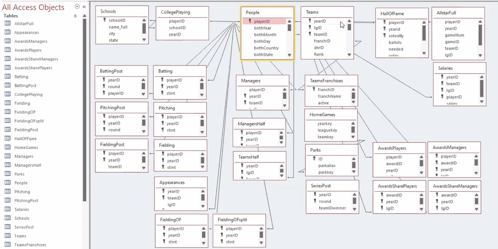

R Library for Sean Lahman’s Baseball Database
Version: 12.0-0 Date: 2024-09-24
Authors:
- Chris Dalzell
- Michael Friendly
- Dennis Murphy
- Martin Monkman
- Vanessa Foot & Justeena Zaki-Azat [vignettes]
Maintainer: Chris Dalzell
Copyright: Sean Lahman
Required: R (>= 3.5.0)
URL: https://CRAN.R-project.org/package=Lahman
Current Version
This is the R version of the 2023 edition of Sean Lahman’s Baseball Database, http://www.seanlahman.com/.
- It now fully reflects the reorganization of data tables in Lahman’s source, the most notable was the renaming of the old
Mastertable, toPeoplein the Lahman Database.
The current database schema is shown in the figure below:

A collection of vignettes has been added, illustrating various data manipulation tasks and analyses to explore some baseball questions. Try:
browseVignettes("Lahman")In addition, the documentation has been updated to use
dplyrandtidyrtools for database manipulation andggplot2for plots.
Installation
For the current CRAN version, simply use:
If you wish to use a non-release version of Lahman, use dev_mode().
dev_mode()
install_github("cdalzell/Lahman", ref="insert_branch_name_here")
# ...test ...
dev_mode() # revert to previousPlease report any problems or issues with this new version as an issue on this site.
Related
A MySQL version of the Lahman database is provided by Nat Dunn: https://github.com/WebucatorTraining/lahman-baseball-mysql
The BaseballDBR package works with
Lahman& other baseball databases and provides some functions to compute other baseball metrics.The Baseball with R blog contains analyses of baseball data stemming from the book Analyzing Baseball Data with R (CRC Press, 2014).